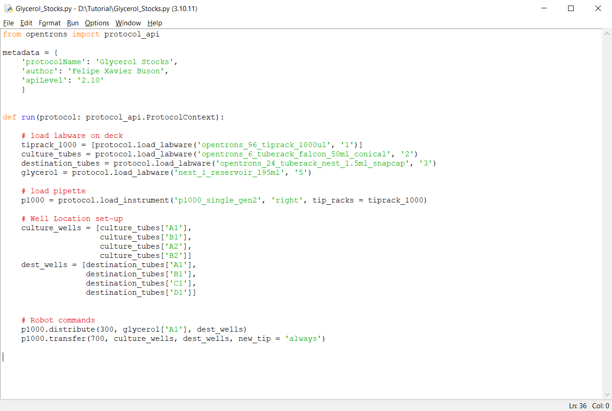
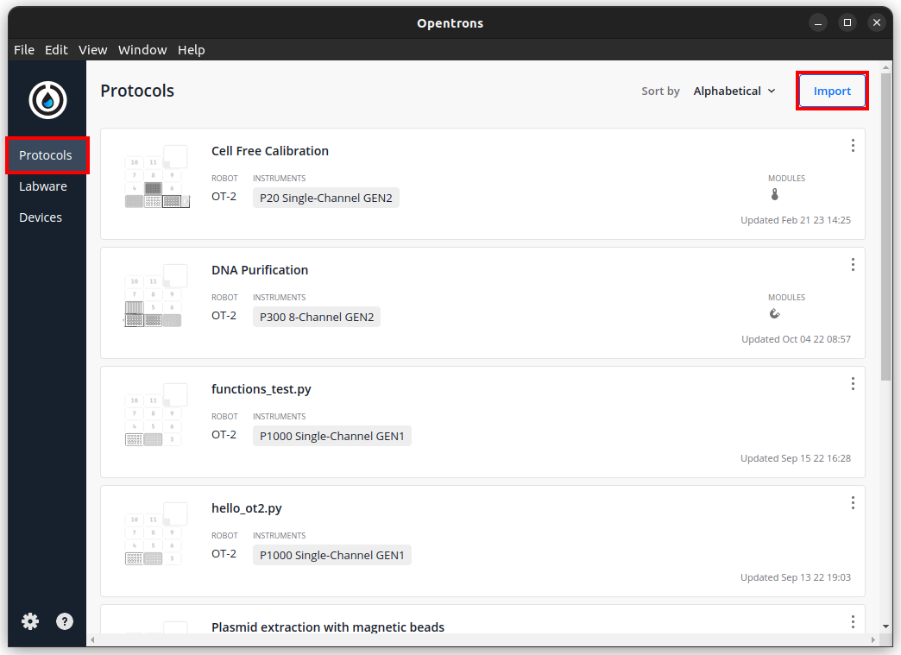

In this tutorial we will cover the basics of working with Python protocols in the OT2. Python protocols give you full access of the robot’s functionalities, along with the programming language’s tools, such as conditional statements, loops, and math integrated into the protocol. This interface allows the creation of versatile protocols, in which you can change a few variables at the start of a script and change the way it behaves. That’s how all the protocols in Opentrons’ Protocol Library are written, so it’s important to understand how to use them and possibly amend their contents to better suit your needs.
Some of Opentron’s pages you might want to check out alongside this tutorial are the Get Started guide for the Python API and the Python API documentation. They provide detailed instructions on how to perform each step of the process so this tutorial intends to provide a more streamlined experience by using a simple protocol as an example. We will first show how to simulate this protocol, to make sure it does what you expect. Then, we will show you how to run this protocol and make changes to it to achieve a slightly different result. Opentrons also has a tutorial for the API covering a lot of these basic principles.
The protocol we will use is our example glycerol stock preparation protocol. Download it and place it into an empty folder for this tutorial. This protocol could be used to prepare glycerol stocks from 50mL conical tubes into 1.5mL tubes, but is simplified for easier understanding. Protocols you find in this library or in OT’s protocol library may have a more flexible way of handling data and deciding what commands to use. Read our Making Python Scripts Flexible tutorial to see how you can make a script adaptable to different starting conditions.
Be aware that this tutorial is written for Windows, and some of the steps will need to be changed if trying to follow it on macOS or Linux systems. Additionally, some changes might happen to Python, Windows, or the Opentrons API after the date of this writing (June 2023).
To simulate the protocol without the robot, you will need to install Python (Source, Windows, macOS). We recommend versions 3.7 to 3.10, since you will need 3.7 or higher to run the opentrons library and we’ve seen errors show up in python 3.11 (the latest release at the writing of this tutorials).
Python by itself can run simple code, and with it you can also define pieces of code to be called and run as functions. Collections of pre-defined Python script can be made into modules, packages and libraries, and we’ll need to install the opentrons module for our simulations. These packages are normally installed with pip, Python’s package installer.
If for some reason your installation of python didn’t include pip, you can ensure its installation through the command line. Open your Command Prompt (check out a Command Prompt basics guide if you’re not comfortable with using it already) and run “py -m ensurepip”. Then, you can download and install the opentrons module by running “py -m pip install opentrons”. You should see the module being downloaded, but in our case, we already had everything installed:
Before installing any packages, you could already inspect the protocol’s code with IDLE (Python’s Integrated Development and Learning Environment). To do that, right-click the protocol file and choose Edit with IDLE > Edit with IDLE [your python version]. You should see the protocol in the IDLE window:

However, this running this script won’t output anything. It just lets the robot or simulator know what instructions to perform. To simulate the protocol, we can go with one of two methods.
First, we can run the simulation from the command line. Open your Command Prompt, navigate to the folder where our example protocol is located (you can do this by running “cd [folder to change to]”) and run “py -m opentrons.simulate __________.py”. You will see each step of the protocol in the output:
In this case we included the option “-3.10” because we have other Python versions installed, so needed to specify which one to use.
Another option to run the simulation is through a Python Environment like IDLE. On the same folder as our example protocol, create a file named “simulator.py” and open it with IDLE. In it, write the code below and run:
from opentrons import simulate as sim
protocol_filename = 'Glycerol_Stocks.py'
protocol_file = open(protocol_filename)
runlog, _bundle = sim.simulate(protocol_file)
format_run = sim.format_runlog(runlog)
print(format_run)
With this script, you can run any other python protocol by changing the “protocol_filename” variable. Be aware that you will have to provide an appropriate path if the simulator and protocol files are not in the same folder.
Python protocols behave like any other protocols in the app. Just go to the “Protocols” tab and click “Import”, then select your protocol’s .py file:

Once the protocol is loaded, you can run it as any other protocol. See other basic tutorials on running protocols for specific information on this step. Note that the protocol title shown in the app is the same one we set in the code’s metadata.
If we’re not happy with specific steps of the protocol, we’ll have to make changes in specific parts of the script to achieve what we intend. We’ll deal with two situations on this tutorial:
However, before we amend anything, we need to understand the structure of the code in a python protocol. This structure revolves around a “run” function, that the robot will read to know what to do. Before starting the run function, we need to import a part of the opentrons module called “protocol_api” (plus any other module the protocol might need) and define some metadata. In our example protocol:
from opentrons import protocol_api
metadata = {
'protocolName': 'Glycerol Stocks',
'author': 'Felipe Xavier Buson',
'apiLevel': '2.10'
}
If you’re checking out the protocol along with the tutorial, you will notice the script defines another function (“get values”) before this section. This will show up in protocols downloaded from the Protocol Library, but is not necessary for all protocols. What it does is get the values you chose on the website when downloading the protocol and pass them to Python variables, so they can be used by the protocol.
After this initial section, we can find the “run” function. This can also be divided in two sections: defining labware and listing commands for the robot. In our example, this function looks like this:
def run(protocol: protocol_api.ProtocolContext):
# load labware on deck
tiprack_1000 = [protocol.load_labware('opentrons_96_tiprack_1000ul', '1')]
culture_tubes = protocol.load_labware('opentrons_6_tuberack_falcon_50ml_conical', '2')
destination_tubes = protocol.load_labware('opentrons_24_tuberack_nest_1.5ml_snapcap', '3')
glycerol = protocol.load_labware('nest_1_reservoir_195ml', '5')
# load pipette
p1000 = protocol.load_instrument('p1000_single_gen2', 'right', tip_racks = tiprack_1000)
# Well Location set-up
culture_wells = [culture_tubes['A1'],
culture_tubes['B1'],
culture_tubes['A2'],
culture_tubes['B2']]
dest_wells = [destination_tubes['A1'],
destination_tubes['B1'],
destination_tubes['C1'],
destination_tubes['D1']]
# Robot commands
p1000.distribute(300, glycerol['A1'], dest_wells)
p1000.transfer(700, culture_wells, dest_wells, new_tip = 'always')
Now imagine we don’t want to use the exact labware in this protocol, but rather, we grew our cultures in 6-well plates and want to transfer them into a 96-deepwell plate instead of tubes. If we want to use labware that’s already defined by Opentrons, we can go to the app and check the “Labware tab” on the left. This takes you to a list with all the labware already defined for your app. To use them in the python script, you must take the “API NAME” defined in the app and use it when loading the labware. For example:
culture_tubes = protocol.load_labware('corning_12_wellplate_6.9ml_flat ', '2')
destination_tubes = protocol.load_labware(' nest_96_wellplate_2ml_deep ', '3')
However, if our labware is not on Opentrons’ list already, we’ll have to use a custom labware file (using similar labware from the list might work but it’s not recommended, since can lead to issues with calibration when running protocols).
Go to _____ and download the ________.json file. In the Opentrons app, you can add custom labware files by going to Labware > Import and picking the file you want to use. You’ll be able to see the new labware by filtering the labware list by “Custom Labware”. In case you want to design or tweak labware definition files for yourself, check out the tutorial on how to make custom labware files.
In case you want to transfer different amounts of liquid within the protocol, or to different wells, you will need to change the portion of the protocol that defines the robot commands. For example, if you wanted to use 0.15mL of glycerol and 0.35mL of culture, and use wells A2 to D2 of the destination instead, you would need to change the script accordingly:
# Well Location set-up
culture_wells = [culture_tubes['A1'],
culture_tubes['B1'],
culture_tubes['A2'],
culture_tubes['B2']]
dest_wells = [destination_tubes['A2'],
destination_tubes['B2'],
destination_tubes['C2'],
destination_tubes['D2']]
# Robot commands
p1000.distribute(150, glycerol['A1'], dest_wells)
p1000.transfer(350, culture_wells, dest_wells, new_tip = 'always')
Notice the values inside the transfer functions are all in μL.
For complex protocols, it might be hard to pin down which section of the protocol corresponds to a particular liquid transfer step (especially when there is a lot of repetition and looping involved). For this reason, it’s always best if protocol writers include comments to communicate what’s happening to protocol users. This can take the form of simple Python comments (with the “#” as we see above) or comments that can be sent to the robot, and will show up on simulations and protocol runs in the app. Try replacing the robot commands section with this code:
# Robot commands
protocol.comment('\n--- TRANSFERRING GLYCEROL ---\n')
p1000.distribute(150, glycerol['A1'], dest_wells)
protocol.comment('\n--- TRANSFERRING CULTURES ---\n')
p1000.transfer(350, culture_wells, dest_wells, new_tip = 'always')
Now if you try to simulate the protocol, you will have clearly signposted steps that tell you what each section is doing.
If you’re unsure if a step in a protocol will work, it can be tedious to edit a python protocol, re-import and run the whole thing again. Fortunately, you can run commands on the robot in real time with the Python API in the Jupyter Notebook environment. See our specific tutorial for that kind of environment and protocol.